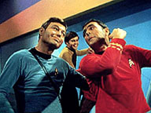
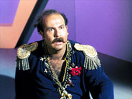
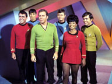
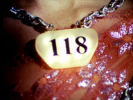
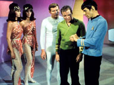
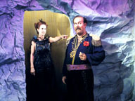

|
MANCHETE
DO EPISDIO
Segmento
aposta em velho conhecido e humor pouco convencional
Episdio
anterior | Prximo episdio Sinopse:
Data Estelar:
4513.3.
 Um tripulante chamado
Norman, que est a bordo da Enterprise h apenas trs dias, intriga o Dr.
McCoy por causa de seu comportamento incomum e distante. As suspeitas do mdico
so confirmadas quando Norman desabilita o operador do controle auxiliar da
Enterprise e redireciona a nave. Depois, Norman assalta a Engenharia da nave e
aumenta a velocidade para dobra sete, colocando uma armadilha nos controles para
impedir que suas modificaes sejam desfeitas. Norman revela ser um andride,
seqestra a Enterprise e leva a nave e toda a tripulao para uma viagem de
quatro dias at um planeta no mapeado e desconhecido, habitado por andrides
que existem apenas para servir humanos.
L, Kirk encontra um
antigo conhecido: Harcourt Fenton Mudd, (do episdio da primeira temporada,
Mudds women). Mudd fugiu da priso, onde estava preso e condenado
morte por fraude e acabou indo parar naquele planeta, onde estava vivendo como
um rei e criou um exrcito de 500 mulheres andrides para satisfazer seus
desejos. Ele tambm criou uma verso de sua rabugenta esposa, Stella, mas
diferente da verdadeira, a andride segue as instrues de se calar quando
Mudd ordena.
 Mudd est sendo estudado
pelos andrides, que so hospitaleiros e fazem todas as vontades do meliante,
mas se recusam a deix-lo partir. Os andrides dizem a Kirk que foram construdos
por aliengenas nativos da galaxia de Andromeda, mas a civilizao que os
construiu foi destruda por uma supernova, deixando-os sem superviso de
humanos. Agora, os andrides acharam um novo propsito de existncia com Mudd,
por serem mquinas criadas para servir humanos. Spock faz diversas perguntas e
descobre que existem 207.809 andrides e que eles parecem ser controlados por
uma fora coordenadora central.
Mudd teletransporta andrides
para a Enterprise para que estes evacuam toda a tripulao da nave. Chekov
fica fascinado quando descobre que as andrides fmeas foram programadas para
desenvolver todas as atividades que as fmeas humanas so capazes. Uhura tambm
no acha o crcere to desagradvel quando lhe prometida a imortalidade.
A idia de Mudd de seqestrar a Enterprise era a de trocar Kirk e a tripulao
por sua liberdade, para que ele pudesse deixar o planeta. Mas, os andrides no
permitem que Harry finalize seu plano, pois eles acham os humanos muito
destrutivos e planejam ludibriar, servir (de acordo com sua programao)
todos os humanos da galxia para assim poderem control-los, utilizando a
Enterprise como veculo e instrumento.
 Spock percebe que existem
muitos robs dos modelos Alice, Oscar e outros, mas somente um Norman. Ele
especula que este deve ser o coordenador central e sugere para que a tripulao
coordene suas tentativas de fuga e seus esforos em tentar desabilitar Norman.
A tripulao ento comea a bolar uma maneira de escapar: eles sedam Mudd
com tranqilizantes e dizem aos andrides que precisam ir at a Enterprise
para cur-lo. Os robs esto para permitir isso, quando Uhura revela aos
captores que quilo era apenas um plano da tripulao para voltar bordo da
Enterprise, e ela diz que sua motivao de trair seus colegas era por que
queria se tornar imortal. Na verdade, Uhura estava seguindo um plano da tripulao,
assim, eles comeam uma srie de aes ilgicas, teatrais e infantis para
confundir os andrides, para tentar desabilit-los, em especial Norman, que
o coordenador central. O objetivo atingido quando Harry diz a Norman: Tudo
que eu digo mentira e o rob no consegue processar este paradoxo.
Os robs tambm so
reprogramados para sua tarefa original de tornar o planeta habitvel para vida
humana. Kirk deixa Harry no planeta para servir de exemplo dos defeitos e falhas
humanas para os andrides. Como uma lio final para Harry Mudd, Kirk deixa
no planeta vrias cpias de Stella, esposa de Mudd, mas estas cpias no
acatam as ordens de Harry, como a anterior, para desespero do trapaceiro.
Comentrios:
 Pode uma
reciclagem ser original ? Por mais que tal indagao seja em principio
contraditria, eventualmente sim, como faz esta edio da Srie Clssica,
que traz de volta um conhecido personagem e se aproveita de alguns elementos j
vistos na temporada anterior. Apesar de muitas vezes incompreendido, este
segmento traz certo frescor por sua abordagem bem humorada. Mas no se deixe
enganar, pois ainda assim ele consegue trazer embutido a mensagem humanista que
sempre permeou a existncia de Jornada, e principalmente a existncia
da Srie Clssica.
I, Mudd uma parbola bem humorada que reafirma o conceito Gene
Roddenbbery sobre a importncia do homem alm de qualquer avano tecnolgico.
Os andrides deste episodio so perfeitos, e o mundo em que eles vivem um
sonho onde, segundo o prprio Kirk, todas as necessidades de um ser humano
podem ser satisfeitas. Podemos resistir a esta tentao, e mais, que mal pode
haver nisto ?
Mais uma vez a moral da historia tenta nos remeter ao perigo que
representa a possibilidade de deixarmos as maquinas controlar nossos destinos,
quando se percebe que os andrides, movidos pela maior boa inteno (!?),
podem vir a transformar a galxia em um local anti-sptico demais para a
humanidade. Dificilmente Mudd seria feliz no sculo 24..
Mas h outra mensagem (subliminar) presente na explicao de Norman para o
desaparecimento dos seus criadores, que mostra o preo que tal civilizao
pagou por esta escolha. Quando veio catstrofe que os extinguiu, os nicos
seres que restaram eram as maquinas criadas por este misterioso povo. Usando
como ponto de comparao o modelo de existncia que Norman e seus
companheiros queriam oferecer a tripulao da Enterprise, e extrapolando que
seria este o estilo de vida dos criadores dos andrides, conclui-se que os
criadores chegaram ao ponto de delegar todas as suas tarefas s maquinas,
enquanto de dedicavam a criar uma ordem social perfeita. Parece claro que
estes criadores chegaram a um ponto onde no tinham mais o tal senso
de propsito do qual fala McCoy.
Quando confrontamos tal opo com a misso da Enterprise, Indo onde nenhum
homem jamais esteve e eventualmente ficando sua bandeira por l, a metfora
contida nesta pequena poro do texto fica clara.
Passando ao obvio, o segmento traz de volta ao cenrio de Jornada nas
Estrelas Harcourt Fenton Mudd (Roger C. Carmel), a quem fomos apresentados
na primeira temporada da srie, em Mudd's Women. Quem se lembra
bem da primeira apario de Mudd vai notar a transformao no perfil do
convidado especial da semana, antes um pilantra vil srdido e totalmente
desprovido de carter . J o personagem deste seguimento mais o tipo bom
malandro, com aquele jeito preguioso e Bon Vivant, e mais
sintonizado com esta nova proposta, bem menos dramtica que a anterior
envolvendo o personagem.
inegvel que Carmel conseguiu criar um personagem de muito carisma, o nico
com direito a bis nas temporadas da Srie Clssica. Harcourt Fenton Mudd um
personagem que desperta a sensao ame-o ou deixe-o, um misto de Dr
Smith (Lost in Space) com Quark (DS9). De fato, este bem que poderia ser
considerado o primeiro Ferengi da historia de Jornada. Muitos fs no
gostam de Mudd, mas existe uma outra forte corrente que nutre admirao por
ele. De fato, o autor j passou pelas duas experincias, e no momento, integra
o segundo time.
Porm, para quem no se lembra ou no notou, o criador na historia deste novo
segmento, Stephen Kandel, (intencionalmente ou no) re-trabalha um outro enredo
j conhecido em Jornada, "What are Little Girls Made Of?".
Temos em ambos os casos, uma grupo de andrides, criados por seres muito
antigos e extintos encontrados por acaso e que podem eventualmente vir a
substituir at mesmo seres humanos.
Diferente do dramtico "What,,, , o segmento em questo tem foco no
humor, que est presente todo o tempo, palmo a palmo linha a linha, no de
forma pontual, mas preenchendo praticamente todos os dilogos dos personagens.
O humor visto aqui mistura o tratamento usual dado a esta questo em Jornada
com uma outra proposta mais singular. Existem dilogos rpidos e mordazes,
como na abertura do episodio, onde McCoy tenta explicar a Spock os motivos de
suas preocupaes quanto a Norman, sem sucesso, ou quando Kirk e Mudd debatem
sobre a forma como o mascate chegou naquele lugar. Alias, o segmento abre e
fecha com a clssica disputa filosfica entre Spock e McCoy.
 Mas temos tambm uma outra faceta humorstica, fortemente representada pela
cena onde Kirk e seus homens (e mulheres) colocam em pratica o seu plano de
fuga, que gera cenas de humor nonsense to surreais que seriam dignas de
uma pea do Monty Python. Toda a ao que comea quando se descobre o plano
dos andrides e culmina com a derrota destes, est impregnada do estilo que
viria a ser a marca registrada do grupo ingls e sem duvida alguma o maior
beneficio do segmento, que consegue caminhar muito bem no limiar entre ser um
episodio bem humorado e agradvel ou uma bobagem completa com muita elegncia.
De volta aos personagens, a mudana de perfil do personagem Mudd muito
similar a mudana de estilo do j citado velho bad guy, velho conhecido
dos fs da fico da dcada de sessenta, o ardiloso Doutor Zachary Smith,
que sofreu o mesmo processo da primeira para a segunda temporada da serie Lost
in Space. Se lembrarmos que a serie Batman, de Adam West, era sucesso de audincia
neste mesmo perodo, no seria errado concluir que havia uma tendncia de
levar mais humor a TV da poca, mesmo em produes que no tinham este tema
com principal, como Jornada.
Mas tal mudana no atinge somente Mudd. Toda a tripulao tem um
comportamento mais leve. Um exemplo disto a passividade incomum com que Kirk
aceita o seqestro da Enterprise pelo andride Norman, coisa rara na serie.
Isto s pode ser explicado pela proposta deste segmento, radicalmente
diferente. Enquanto Mudd's Women lidava com temas pesados, como
prostituio, trafico de escravas brancas e principalmente o uso de drogas, o
presente segmento parece ser a observao do ser humano, no que ele tem de
melhor e pior, tema que viria a ser recorrente em Jornada, sem duvida,
mas que aqui tratado de forma singular.
Mais uma vez Spock um componente fundamental da trama, ao agir como elemento
de ligao entre a tripulao da Enterprise e os Andrides de Mudd, e ao
fazer isto nos d uma oportunidade interessante de observar este personagem de
um ngulo diferente. Comumente Spock comparado com um computador ou uma
maquina em funo de sua lgica s vezes quase fundamentalista, mas aqui
percebemos que a lgica no precisa ser necessariamente mecnica e o roteiro
ilustra esta diferena. necessria uma inteligncia criativa para poder
equilibrar a lgica e a sabedoria, como nosso vulcano favorito viria a declarar
um dia.
No s Spock que se destaca. Este um dos raros episdios da Srie Clssica
em que todos os personagens que viriam a ser eternizados pela comunidade trekker
(com exceo de Sulu) tm boas participaes ao longo da trama, que mantm
o foco em Kirk e Spock, mas equilibra bem as aes entre os outros membros da
equipe. Embora McCoy perca um pouco de espao, a distribuio deste espao
entre os outros membros do grupo bem vinda e eficiente.
 Apesar deste equilbrio, o vo solo de Spock merece comentrio. O vulcano
tradicionalmente sereno comea o episodio esculachando McCoy, apia com
maestria quase todos os momentos importantes do segmento, fornecendo uma contra
ponto irnico e preciso e todas as suas intervenes. Mrito para o mais uma
vez excelente trabalho de Nimoy.
Diz-se que mais difcil fazer rir que chorar, ou que a comedia muito mais
difcil que o drama, sendo assim, destaque tambm para Willian Shatner, que
mais uma vez cala os crticos, com uma atuao soberba e muito competente.
fato que nem sempre Shatner atingiu este nvel, e esta longe da regularidade
positiva de Nimoy, mas inegvel que quando o ator acerta, a Srie Clssica
cresce muito. Parece obvio dizer isto, sendo Shatner responsvel pelo
personagem principal da srie, mas importante reafirmar este fato, para a
justia ao ator que sempre questionado por muitos.
O convidado especial Richard Tatro tambm consegue fazer um bom papel como o
Andride Norman, tarefa que deve ter sido ainda mais complicada neste caso.
Tatro deve ter tido muitas dificuldades para se manter srio durante as gravaes.
No mais, as participaes das atrizes que fizeram o papel dos andrides fmeas
cumpriram seu papel, embora sem destaque. A musica composta por Samuel Matlovsky
para este segmento tambm funciona muito bem, e merece destaque positivo.
A cena final, na qual conhecemos o castigo imposto pelo maquiavlico Kirk a
Mudd, com direito a um adeusinho debochado da tripulao da Enterprise a
cereja do bolo, e encerra o segmento com a muita propriedade. No fim das contas
este um episodio dos mais interessantes produzidos pela Srie Clssica,
nico e que vale a pena ser revisitado, mas para aproveit-lo em sua plenitude
preciso manter a mente aberta s infinitas diversidades em suas infinitas
combinaes.
Citaes:
McCoy:
"There's something wrong about a man who never smiles, whose conversation
never varies from the routine of the job, and who won't talk about his
background."
("Existe algo errado a cerca de um homem que nunca sorri, cuja conversa
nunca varia alm de sua rotina de trabalho, e que nunca fala sobre sua famlia.")
Mudd: "Know the penalty for fraud on Deneb 5?"
("Conhece a pena por fraude em Deneb 5?")
Spock: "The guilty party has his choice. Death by electrocution, death
by gas, death by phaser, death by hanging..."
("O acusado tem sua escolha. Morte por eletrocusso, morte por gs, morte
por fazer, morte por estrangulamento...")
Mudd: "The key word in your entire peroration, Mr. Spock, was death."
("A palavra chave em toda sua dissertao, Sr Spock, morte.")
Mudd: "Knowledge, sir, should be free to all."
("Conhecimento, Sr, devia ser livre para todos.")
Alice: "It is necessary to have purpose."
(" necessario ter um propsito".) Normam:
"Your species is self-destructive. You need our help."
("Sua espcie auto-destrutiva. Vocs precisam de nossa ajuda.")
Spock: "Logic is a little tweeting bird chirping in a meadow. Logic is a
wreath of pretty flowers which smell bad."
("Lgica um pssaro pequeno que chilra em um prado. A lgica uma
grinalda das flores bonitas que cheiram mal".) Trivia:  Harcourt Fenton Mudd retornaria na Srie Animada em novembro de 1973,
no episdio Mudd's Passion.
Harcourt Fenton Mudd retornaria na Srie Animada em novembro de 1973,
no episdio Mudd's Passion.
A produo da srie usou gmeos para retratar as sries de Andrides,
conseguindo um resultado final muito eficiente. Tal recurso, aliado a
criatividade permitiu que os andrides fossem multiplicados atendendo as
necessidades do roteiro.
O
primeiro roteiro de I, Mudd dava mais ateno ao seqestro da
Enterprise por Norman. Nesta verso Spock chega a sugerir que o andride seja
desmontado.
Stephen
Kandel: Alm de I, Mudd , Stephen Kandel tambm escreveu "Mudd's
Women" (com Gene Roddenberry) para a Srie Clssica. Para a Srie
Animada ele foi responsvel pelas historias de Mudd's Passion e
Jihad.
Kandel foi responsvel por roteiros de varias series de sucesso dos anos
sessenta a oitenta. Entre as mais conhecidas do publico brasileiro esto "Charlie's
Angels" (As Panteras) "The Wild Wild West" (James West) "Batman"
(Adam West) "Hawaii Five-O", "The Six Million Dollar Man"
"Wonder Woman" "CHiPs" "The Dukes of Hazzard" (Os
Gates) "Hart to Hart"(Casal 20) "MacGyver"e "Mission:
Impossible" (1966 e 1988).
Este foi o nico trabalho do msico Samuel Matlovsky para Jornada nas
Estrelas.
Roger C. Carmel cometeu suicdio em 11 de Novembro 1986.
Ficha
tcnica:
Escrito por Stephen Kandel
Direo de Marc Daniels
musica de Samuel Matlovsky
Exibido 11 de maro de 1967
Produo: 41
Elenco:
William Shatner como James Tiberius
Kirk
Leonard Nimoy como Spock
DeForest Kelley
como Leonard H. McCoy
Nichelle Nichols como Uhura
George
Takei como Hikaru Sulu
Elenco convidado:
Roger C. Carmel como Harcourt Fenton Mudd
Kay Elliott como Stella Mudd
Richard Tatro como Norman
Rhae e Alyce Andrece como Srie Alice
Tom e Ted Legarde como Srie Herman
Tamara e Starr Wilson como Srie Maisie
Maureen e Colleen Thornton como Srie Barbara
Sinopse por Alexandre
Bortuluci
Episdio anterior | Prximo episdio
|